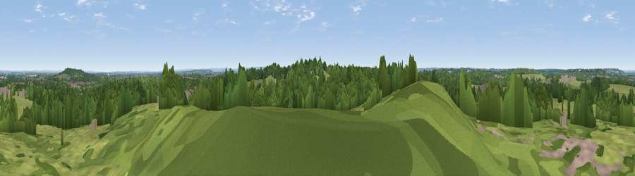

Viewpoint near Lyne
#36626 in England · top 40% of its area beats it · near LyneWhere it is
The exact computed spot (TQ 01025 65725). Click the marker for map links.
The view, rendered

A 360° render of this exact spot computed from the terrain model, tree cover and land cover — summer colours, afternoon light, calibrated against photographs of famous viewpoints. Real trees, hedges and buildings will differ in detail.
The panorama
Grey silhouette: terrain skyline in each direction (720 bearings, Earth curvature and refraction included). Dashed green: skyline with trees (+15 m) and buildings (+8 m) as obstacles. Blue strip: how far the ground is visible on each bearing.
Where the view opens
Wedge length = distance to the farthest visible ground on that bearing (vegetation-aware). Rings at 10, 25 and 50 km.
What fills the view
48% grassland · 47% woodland · 4% built-up · 2% cropland
Angular shares of the visible panorama (visual magnitude), not map area. Landscape diversity 0.40 (0–1 Shannon).
Key numbers
More beautiful places nearby
The staircase of upgrades: each row has a higher view potential than everything closer. Driving times are estimates from straight-line distance, calibrated against real road routing — check an actual route before setting out.
| Place | Direction | Drive | Score |
|---|---|---|---|
| Fox Hills | S · 1 km | ~2 min | 42.9 |
| St Ann's Hill | NE · 3 km | ~6 min | 51.8 |
| Viewpoint near Bishopsgate | NNW · 7 km | ~15 min | 53.6 |
| Viewpoint near Chilworth | S · 17 km | ~29 min | 57.5 |
| Viewpoint near Guildford | SSW · 17 km | ~30 min | 65.4 |
| Viewpoint near Compton | SSW · 18 km | ~31 min | 66.7 |
| Viewpoint near Box Hill Village | SE · 23 km | ~38 min | 68.1 |
| Viewpoint near Box Hill Village | SE · 24 km | ~39 min | 71.0 |
51.38159, -0.54973 · source: screening · position refined by local search. Computed location — check access rights before visiting.